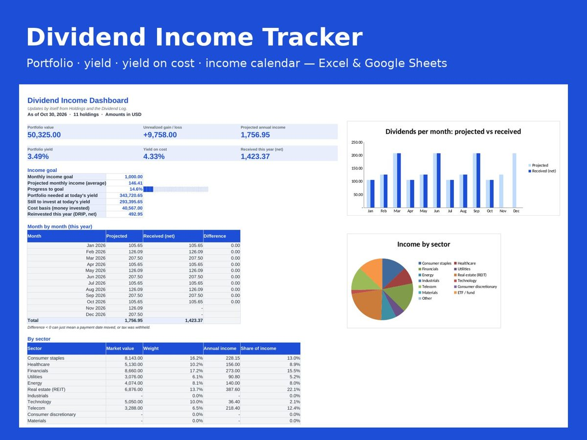

Dividend Income & Stock Portfolio Tracker (Yield, Income Calendar) – Excel & Google Sheets
Watch your passive income grow. Track your dividend stocks and ETFs, see what each month will pay you, log the dividends that actually arrive and follow your progress to your monthly income goal.
Get it on Gumroad – US$17, one-time
What's inside
- Holdings for up to 50 stocks, ETFs or funds: cost basis, market value, gain/loss, weight
- Dividend yield, yield on cost, annual and monthly income per holding and for the whole portfolio
- Income calendar: projected dividends per month for every holding (monthly, quarterly, semi-annual, annual payers)
- Dividend log with tax withheld and DRIP (reinvested) tracking – received this year per holding
- Dashboard: projected vs received per month, income by sector, value and income charts
- Income goal: progress bar and how much more you need to invest at today's yield
- Any currency, no macros, blank copy plus a sample copy (prices update by hand or with GOOGLEFINANCE in Sheets)
How it works
- Open the file in Excel, or upload it to Google Drive and open with Google Sheets.
- Read the "Start Here" tab (2 minutes). Yellow cells are yours to fill in, grey cells calculate by themselves.
- Type your own numbers; the dashboard, charts and alerts update as you go.
Related guide
Net worth tracker spreadsheet: what to include and how to update it
Questions
Does it work in Google Sheets?Yes. Upload the .xlsx file to Google Drive, open it with Google Sheets, and all formulas, drop-down lists and conditional formatting keep working. No macros are used.
Which Excel versions are supported?Excel 2010 or newer on Windows and Mac, including Microsoft 365. Numbers on iPad/Mac and LibreOffice also open it, with small cosmetic differences.
What do I get after paying?An instant download of a ZIP with two files: a blank copy ready for your numbers and a copy filled with sample data so you can see how every sheet works. Start on the "Start Here" tab.
Can I use my own currency?Yes. Pick the currency symbol once in Settings and every sheet follows.
What if it is not for me?Email within 14 days and you get a refund.